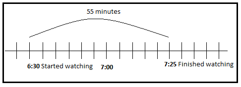
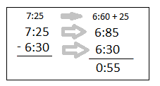

Alice started watching her favorite educational TV program at 6 : 30 in the evening. It is finished watching at 7:25 in the evening, how long did Alice watch the program?
How will you solve the problem?
You can use a number line to solve for the answer.
You notice that from 6:30 to 7:25 is 55 minutes.
You can also subtract to find the answer.
Rename 1 hours as 60 minutes.
Add 60 and 25 minutes. Subtract.
So, Alice watched her favorite TV program for 55 minutes . The length of time that Alice spent watching TV is called elapsed time.
Can you think of other ways to solve for the answer to the problem?
Let's Practice!A. Complete the table by filling in the elapsed time.
| Start time | End time | Elapsed time |
|---|---|---|
| 6:15 | 6:56 | 41 minutes |
| 3:05 | 3:48 | 43 minutes |
| 5:04 | 5:59 | 55 minutes |
| 1:05 pm | 1:54 pm | 49 minutes |
| 2:55 pm | 3:25 pm | 30 minutes |
| 4:45 am | 5:30 am | 45 minutes |
| 7:36 am | 8:12 am | 36 minutes |
B. Use the table to answer the following questions below.
1. How long is the flight from Manila to Legaspi? 55 minutes
2. If Mrs. Ortiz is going to Ilo Ilo from Cebu, how long will her flight be? 45 minutes
3. How long will Cathy's flight be if she goes to Butuan from Davao city? 1 hour and 5 minutes
4. How long will a group of tourists travel from Manila to Laoag? 51 minutes
5. How many minutes longer is the flight from Cebu to Ilo Ilo than that from Cebu to Masbate? 5 minutes